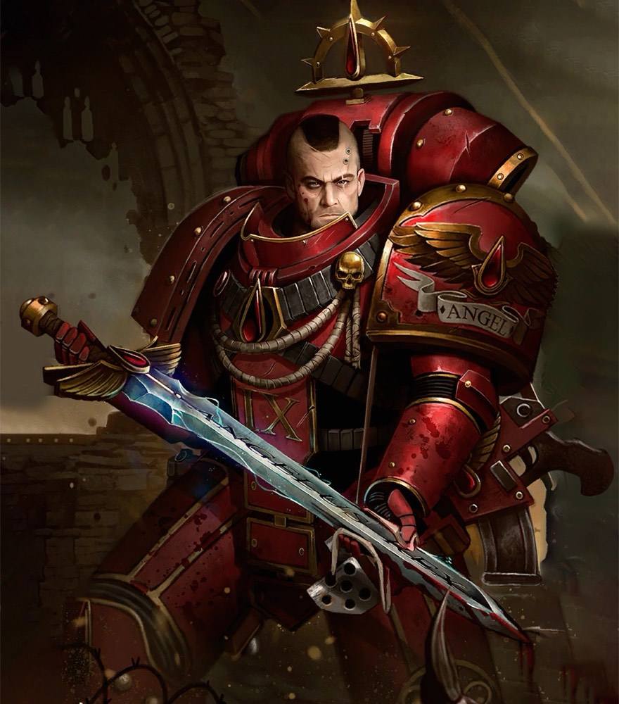

Raldoron
| Raldoron | |
|---|---|
| First Captain and Equerry of the Blood Angels | |
 Raldoron in the armour of a Blood Angels captain, with the Encarmine Warblade | |
| First Captain of the IX Legion | |
| Tenure | c. 000.M31 – 014.M31 (estimated) |
| Commanded | 1st Company, the Protectors |
| Primarch | Sanguinius |
| Chapter Master of the Blood Angels | |
| Tenure | c. 021.M31 – date not recorded (estimated) |
| Predecessor | None; first Chapter Master after the Second Founding |
| Born | Not recorded |
| Allegiance | Imperium of Mankind (loyalist) |
| Legion | IX Legion, later Blood Angels |
| Died | Not recorded; fate lost to history |
| Wargear | The Encarmine Warblade, a power sword; combi-flamer |
| Known for | Leading the 1st Company at the Signus Campaign and the Siege of Terra |
Raldoron, known to the Blood Angels as "the Blooded", was the First Captain of the IX Legion during the Great Crusade and the Horus Heresy. He commanded the 1st Company, and he served Sanguinius as Equerry, holding the then-new title of Chapter Master within the Legion. After the Heresy he became the first Chapter Master of the Blood Angels following the Second Founding. He is one of the most frequently named captains of the IX Legion in the Heresy records.
Raldoron was a captain of the Three Hundred Companies, and his promotion to Chapter Master gave him a seniority that few other warriors of the Legion held. Imperial records describe him as austere, observant and steady, and he is recorded as the primarch's most trusted adviser on the moods and loyalties of the Legion's warriors.
Early career
[edit]The Great Crusade
[edit]Raldoron fought in many joint campaigns with other Legions during the Great Crusade. He served alongside the Luna Wolves in the war against the Nephilim on Melchior, where he saw early signs of the Red Thirst, the Blood Angels' genetic affliction. He reported the Red Thirst's first victim to Sanguinius, who chose to deal with the matter himself.[1] After the Ullanor Crusade, which ended in the Triumph of c. 000.M31, he led the Blood Angels against the remaining Ork forces at the Kayvas Belt.[2]
The Council of Nikaea
[edit]In 001.M31 Raldoron attended Sanguinius at the Council of Nikaea, held on the world of Nikaea. The council issued the Edict of Nikaea, which banned the Librarius of the Space Marine Legions and the use of psychic combat by Astartes. Raldoron is recorded as having argued with the captain Nassir Amit over the decree, warning him that anger at the edict could destroy him.[3]
Signus Campaign
[edit]In 005–006.M31 the Blood Angels were ordered back into the Signus Cluster to finish a campaign against the Nephilim. The campaign was a trap set by the Warmaster Horus, with Word Bearers helping to lay it. In the Signus Campaign, the Blood Angels found that Signus Prime was an altar to the Ruinous Powers. The Blood Angels' flagship, the ''Red Tear'', was destroyed, and Ka'Bandha wounded Sanguinius.
Raldoron led the 1st Company during the battle. He rallied the Legion when the Ragefire spread through its ranks, and he led a kill-team that found the source of the madness, the soul of a captain named Tagas, held as fuel for daemonic rage. He killed the Word Bearers captain Uan Harox in the sanctum of the Cathedral of the Mark. Imperial accounts record that the Ragefire was quelled only when Meros sacrificed himself to hold the curse.[4]
Horus Heresy
[edit]After Signus, Raldoron followed Sanguinius to Macragge, where he was commander and confidant during the forging of the Imperium Secundus in 009–011.M31. He fought through the Ruinstorm, and at the Battle of Beta-Garmon he helped Sanguinius hold a faltering war effort.
At the Siege of Terra, 013–014.M31, Raldoron was given command of the Helios Gate of the Imperial Palace. He fought at the Colossi Gate alongside Jaghatai Khan and the Custodes Constantin Valdor. In the final assault, Raldoron and his veterans accompanied Sanguinius to the Vengeful Spirit. The Blood Angels were trapped in the Warp, and when Sanguinius died they were overcome by the Black Rage. When the madness passed, Raldoron had a dozen survivors left. He led the mourning of the Emperor and the primarch, and the survivors carried Sanguinius' body to the Imperial Palace.[5]
After the Heresy
[edit]The Codex Astartes, promulgated by Roboute Guilliman, divided the Legions into Chapters. In the Second Founding, c. 021.M31, the IX Legion became the Blood Angels, and Raldoron was named the first Chapter Master. He took Sanguinius' body to Baal and laid it in a tomb of obsidian and fire, where it is held to lie until the end of all things.[2] He took part in the Great Scouring, hunting the Traitor Legions across the galaxy.
Raldoron's later years are not recorded in the Imperial sources. His fate is described as lost to history.
Character and reputation
[edit]Raldoron is remembered as a tactician who adapted quickly to changing conditions and who held no attachment to rigid doctrine. He is recorded as having a deep distrust of the Night Lords, whose cruelty he regarded as the opposite of the nobility he sought. He carried the Red Thirst's burden with grim patience, and sources describe him as the emotional anchor of the IX Legion.
Timeline
[edit]| Date | Event |
|---|---|
| c. 000.M31[a] | Raldoron becomes First Captain of the IX Legion and commands its 1st Company |
| c. 000.M31 | The Ullanor Crusade ends in the Triumph; Raldoron leads the Blood Angels against the remaining Orks at the Kayvas Belt |
| c. 000.M31[b] | Raldoron fights with the Luna Wolves against the Nephilim on Melchior and reports the first victim of the Red Thirst to Sanguinius |
| 001.M31 | Raldoron attends Sanguinius at the Council of Nikaea, which issues the Edict of Nikaea |
| 005–006.M31 | Raldoron leads the 1st Company in the Signus Campaign and kills the Word Bearers captain Uan Harox |
| 007.M31 | Raldoron fights through the Ruinstorm raised at the Battle of Calth |
| 009–011.M31 | Raldoron serves as commander and confidant to Sanguinius during the forging of the Imperium Secundus at Macragge |
| 013–014.M31 | Raldoron commands the Helios Gate at the Siege of Terra; the Blood Angels are lost in the Warp and Sanguinius dies aboard the Vengeful Spirit |
| c. 021.M31[c] | In the Second Founding the IX Legion becomes the Blood Angels and Raldoron is named its first Chapter Master |
| after c. 021.M31 | Raldoron takes the body of Sanguinius to Baal and takes part in the Great Scouring |
See also
[edit]Notes
[edit]References
[edit]- ^ Oliton, Mersadie (c. 005.M31). Chronicles of the Luna Wolves. Remembrancer Order.
- ^ a b Liber Ecclesiasticus (M37). Adeptus Ministorum.
- ^ Liber Primarchus (M32, revised M41). Administratum Archive, Terra.
- ^ Chronicles of the Heresy (sealed). Logos Historica Verita, Terra.
- ^ Sindermann, Kyril (c. 004.M31). Remembrances of the 63rd Expedition. Remembrancer Order.